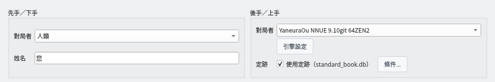
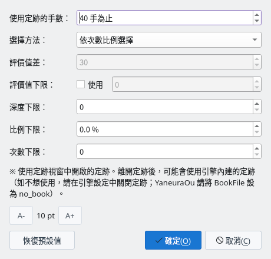

對局中使用
對局中輪到自己時，以及不在對局中時，可以直接執行定跡著法。也可以讓對局中的引擎使用定跡
4
執行定跡著法
對局中輪到自己時，「執行」欄會顯示按鈕。按一下按鈕或按兩下該行即可執行該定跡著法（升變與否也依照定跡）。執行的著法與在棋盤上走的著法一樣記錄在棋譜中。
輪到引擎時以及引擎之間的對局中，「執行」欄為空，無法執行定跡著法。不在對局中時按一下「執行」，該著法會作為目前著法的下一著記錄到棋譜中（不同的著法會成為新的變化，請參閱變化樹中的「在棋盤上走子新增變化」）。

對局中：輪到自己時可用「執行」按鈕走定跡著法
5
讓引擎使用定跡
在對局對話方塊中把對局者設為引擎後，會顯示「使用定跡」與「條件…」。勾選「使用定跡」後，輪到該引擎時，如果定跡視窗中開啟的定跡裡有符合條件的著法，就不讓引擎思考，直接走該著法。走子前至少等待 1 秒。離開定跡後，引擎照常思考走子。
定跡視窗中沒有開啟定跡檔案時，無法勾選「使用定跡」。對局使用開始對局時的定跡，因此對局中編輯定跡或切換到其他檔案，不會影響該對局。走定跡著法時，引擎資訊的「搜尋著法」中會顯示「△８四歩(83)（定跡 39.9%）」這樣的內容（%為比例）。評價值圖表中不新增點。

對局對話方塊：引擎對局者的「使用定跡」與「條件…」
6
使用定跡的條件
在「條件…」中可以選擇使用定跡的條件，含義與 YaneuraOu 的定跡選項相同。
- 使用定跡的手數：到此手數為止的著法使用定跡（BookMoves）
- 選擇方法：「依次數比例選擇」「依評價值選擇（在與最佳的差距範圍內等機率）」「表格中的第一個著法」（ConsiderBookMoveCount、BookEvalDiff）
- 評價值差：選擇「依評價值選擇」時，在與最佳評價值相差不超過此值的著法中選擇（BookEvalDiff）
- 評價值下限：不使用從走子方看來評價值低於此值的著法（BookEvalBlackLimit、BookEvalWhiteLimit）
- 深度下限：不使用深度低於此值的著法。從棋譜登記的著法深度為 0（BookDepthLimit）
- 比例下限、次數下限：不使用比例、次數低於此值的著法
- 離開定跡後，可能會使用引擎內建的定跡。如不想使用，請在引擎設定中關閉定跡（YaneuraOu 請將 BookFile 設為 no_book）

定跡條件